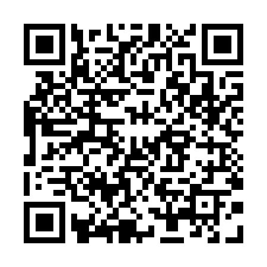

Tamil Cultural Association, IIT Bombay
Tamil Fest 2022 - Tickets
April 16, 2022 - LT PCSA, IIT Bombay
Coupon Code: sfzhc0wauk
Name: SRIHARI B
Mobile Number: 9952147487
Mail Id: srihari.b.official@gmail.com
Category: Faculty/Non-Teaching Staff
Type: Subscription Mode
Coupon (Self): 2
Coupon (Guest):
Tot. Coupons: 2
Dinner Slot: 8:30 pm
Contribution:
Total Paid: 2500
